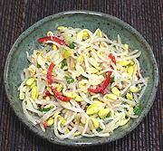

|
Bean Sprout Salad #2Korea - Kongnamul | ||||
| Serves: Effort: Sched: DoAhead: |
6 ban * 20 min Yes |
This is one of the most common of the many tiny banchan side dishes served with a Korean meal. I can't remember any meal in a Korean restaurant at which a bean sprout banchan was not served. In the quantities usually served with a Korean meal this recipe will easily serve 6. | |||
|
12 1/2 6 2 1 1 1/3 1 |
oz t c cl t T |
Bean Sprouts (1) Salt Water Scallions Garlic Chili, Red (2) Salt Sesame Salt (3) |
Make - (20 min - or 1 hour (see Note-1))
|